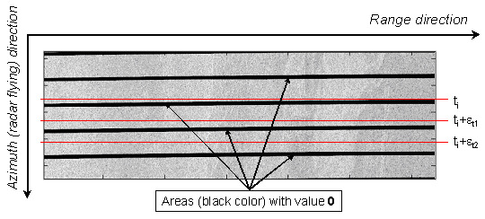

ASAR WSS Deburst Operator
For each subswath, the WSS products have many overlapping
‘bursts’ along the flight direction associated with a zero Doppler time for each
range line.

The first step in performing the azimuth debursting is to find all
range lines belonging to the same zero-Doppler time.
The Operator provides the following options:
Produce intensities only: The complex data is converted to intensity and the peak of each burst is used.
Average intensities: When producing intensities, the coresponding burst lines are mean averaged.
If
"Product intensities only" is not selected, then complex data will be
produced along with virtual bands for intensity and phase.